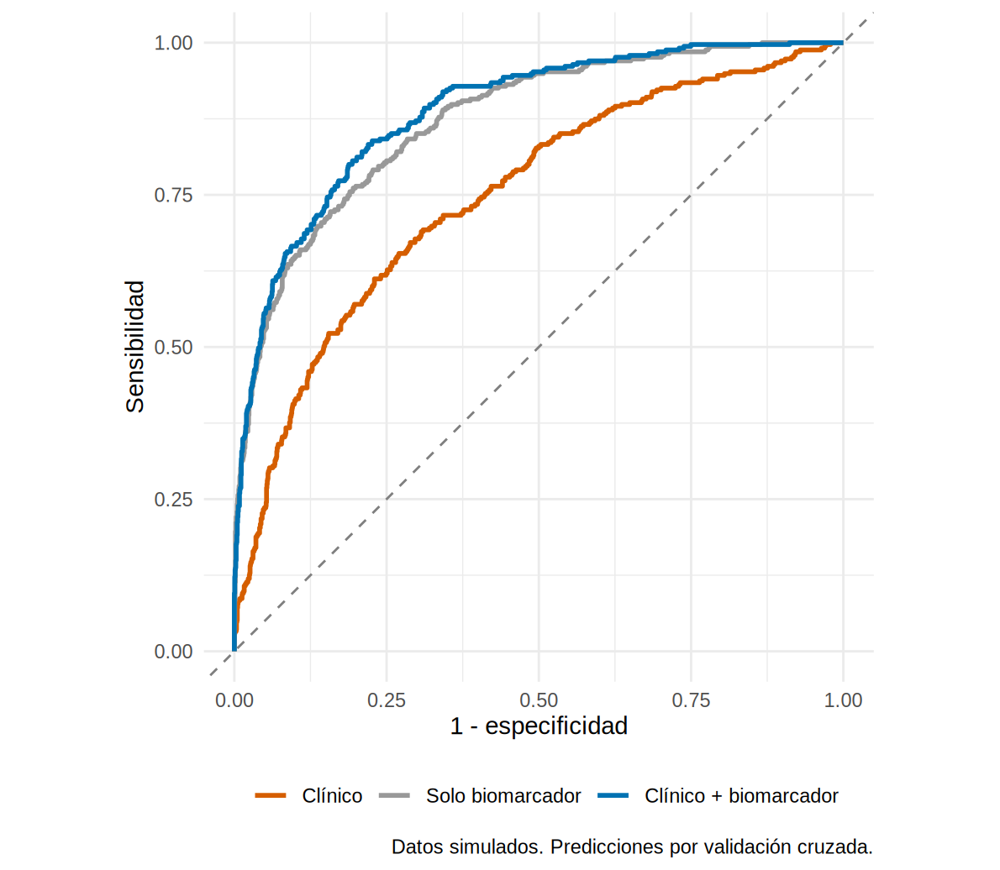

Un modelo diagnóstico multivariable: ¿qué añade el biomarcador?
En la guardia nadie decide con un solo dato. Frente a la paciente de 72 años con sepsis en UCI y creatinina de 1.4 ya sospechas una LRA por su edad, su contexto y sus fármacos. La pregunta útil no es “¿discrimina el biomarcador?” (ya sabemos que sí, AUC 0.87), sino: ¿qué añade el biomarcador a lo que ya sabías sin él? Si no añade nada, se ahorra dinero y tiempo; si añade mucho, vale la pena medirlo.
Un modelo diagnóstico multivariable combina varios datos del paciente en una sola probabilidad de tener la condición ahora. Comparar un modelo “clínico” contra el mismo modelo con el biomarcador responde la pregunta del valor añadido (incremental value).
Lo que vamos a hacer
- Ajustar un modelo clínico y un modelo clínico + biomarcador con regresión logística.
- Medir su discriminación sin engañarnos (validación cruzada y bootstrap) y el valor añadido (ΔAUC).
- Ver qué pacientes reclasifica el biomarcador (NRI), con las cautelas que exige esa medida.
Dos decisiones previas. Primera: el biomarcador entra en escala log₂, porque es muy asimétrico y así el coeficiente se interpreta por cada duplicación del valor. Segunda: antes de fiarnos de que el biomarcador actúa de forma lineal en esa escala, lo comprobamos con un spline (el tema de 8.5); si hay no linealidad, lo vemos en la prueba correspondiente:
Wald Statistics Response: lra
Factor Chi-Square d.f. P
edad 2.57 1 0.1086
diabetes 5.58 1 0.0181
sepsis 2.52 1 0.1127
nefrotoxicos 7.82 1 0.0052
log_creat 6.54 1 0.0105
entorno 19.12 1 <.0001
log2_ngal 266.53 3 <.0001
Nonlinear 2.65 2 0.2656
TOTAL 350.77 9 <.0001Qué vemos: la fila Nonlinear de log2_ngal tiene p = 0.27: no hay evidencia de desviación de la linealidad en el logit. Dejamos el biomarcador como un término lineal en log₂.
Paso 1. Dos modelos anidados
El modelo clínico usa lo que ya tienes a la cabecera de la cama: edad, diabetes, sepsis, nefrotóxicos, creatinina de ingreso y entorno (UCI/sala). El modelo completo añade el biomarcador.
f_clin <- lra ~ I(edad / 10) + diabetes + sepsis + nefrotoxicos + log_creat + entorno
f_full <- update(f_clin, . ~ . + log2_ngal)
m_clin <- glm(f_clin, data = dx, family = binomial)
m_full <- glm(f_full, data = dx, family = binomial)
tidy(m_full, conf.int = TRUE, exponentiate = TRUE) |>
filter(term != "(Intercept)") |>
select(termino = term, OR = estimate, ic_inf = conf.low, ic_sup = conf.high, valor_p = p.value) |>
mutate(across(where(is.numeric), \(x) round(x, 3)))# A tibble: 7 × 5
termino OR ic_inf ic_sup valor_p
<chr> <dbl> <dbl> <dbl> <dbl>
1 I(edad/10) 1.09 0.98 1.20 0.115
2 diabetes 1.49 1.07 2.06 0.018
3 sepsis 1.33 0.934 1.89 0.111
4 nefrotoxicos 1.62 1.15 2.26 0.005
5 log_creat 1.88 1.16 3.06 0.011
6 entornoUCI 2.11 1.52 2.93 0
7 log2_ngal 3.82 3.27 4.51 0 Qué vemos: cada duplicación del biomarcador multiplica las odds de LRA por 3.8 (IC 3.3 a 4.5), a igualdad del resto. Es el predictor dominante. Fíjate en la sepsis: en el modelo clínico su OR era de 2.6, y con el biomarcador baja a 1.3. La sepsis eleva el biomarcador, y este ya “contiene” parte de lo que la sepsis aportaba a la predicción. Es una muestra de por qué los coeficientes de un modelo predictivo no se leen de forma aislada.
Los OR de arriba no son efectos causales de cada variable. El modelo está construido para predecir bien, no para estimar el efecto de la sepsis o de los nefrotóxicos (para eso se necesitan los métodos de los Caps. 10-12). Interpretar cada coeficiente como “el efecto de” es la Table 2 fallacy de 8.6.
Para una paciente concreta, el modelo devuelve una probabilidad. Tomemos a la del escenario (72 años, UCI, sepsis, sin diabetes ni nefrotóxicos, creatinina de 1.4 mg/dL) y supongamos dos resultados posibles del biomarcador, uno bajo (60 ng/mL) y uno alto (320 ng/mL):
paciente <- tibble(edad = 72, diabetes = 0, sepsis = 1, nefrotoxicos = 0, log_creat = log(1.4), entorno = "UCI")
riesgo_clin <- predict(m_clin, paciente, type = "response")
riesgo_bio <- predict(m_full, bind_rows(mutate(paciente, log2_ngal = log2(60)), mutate(paciente, log2_ngal = log2(320))), type = "response")
c(solo_clinica = unname(riesgo_clin), biomarcador_60 = unname(riesgo_bio[1]), biomarcador_320 = unname(riesgo_bio[2])) |> round(3) solo_clinica biomarcador_60 biomarcador_320
0.410 0.084 0.700 Qué vemos: con solo la clínica, su riesgo de LRA ≥ 2 es de 41 %. Con un biomarcador de 60 ng/mL baja a 8 % y con uno de 320 ng/mL sube a 70 %. Eso es el “valor añadido” a nivel individual: el biomarcador separa a pacientes que, clínicamente, parecían iguales. Ahora hay que medirlo en todos los pacientes.
Paso 2. Discriminación sin engañarnos
Si evalúas el modelo en los mismos pacientes con que lo ajustaste, el AUC sale ligeramente optimista (el modelo “ya vio” esos datos). Tres maneras de corregirlo: la validación cruzada, el bootstrap de optimismo y una muestra independiente (esta última, en el Cap. 17). Empezamos con el AUC aparente y los dos primeros:
## 1. AUC aparente (en la misma muestra)
aparente <- c(Clinico = auc_rapida(fitted(m_clin), dx$lra), `Clinico + biomarcador` = auc_rapida(fitted(m_full), dx$lra))
## 2. Predicciones fuera de muestra con validación cruzada de 10 particiones
p_clin <- prob_cv(f_clin, dx, K = 10, semilla = 164)
p_full <- prob_cv(f_full, dx, K = 10, semilla = 164)
cv <- c(Clinico = auc_rapida(p_clin, dx$lra), `Clinico + biomarcador` = auc_rapida(p_full, dx$lra))
## 3. Bootstrap de optimismo (200 remuestras)
boot_clin <- auc_optimismo(f_clin, dx, B = 200, semilla = 1)
boot_full <- auc_optimismo(f_full, dx, B = 200, semilla = 1)
tibble(modelo = names(aparente), aparente = aparente, validacion_cruzada = cv,
bootstrap_corregida = c(boot_clin$auc_corregida, boot_full$auc_corregida)) |>
mutate(across(where(is.numeric), \(x) round(x, 3)))# A tibble: 2 × 4
modelo aparente validacion_cruzada bootstrap_corregida
<chr> <dbl> <dbl> <dbl>
1 Clinico 0.754 0.748 0.75
2 Clinico + biomarcador 0.89 0.887 0.887Qué vemos: el AUC del modelo clínico es de 0.75 y el del modelo con biomarcador de 0.89. Los tres métodos casi coinciden: con 335 casos y solo 7 predictores hay poco sobreajuste (el optimismo del bootstrap es de 0.003). Con pocos casos o muchas variables, la diferencia sería grande (Cap. 17). Dibujamos las tres curvas con las predicciones fuera de muestra:
roc_clin <- roc(dx$lra, p_clin, levels = c(0, 1), direction = "<", quiet = TRUE)
roc_full <- roc(dx$lra, p_full, levels = c(0, 1), direction = "<", quiet = TRUE)
roc_bio <- roc(dx$lra, dx$ngal, levels = c(0, 1), direction = "<", quiet = TRUE)
ggroc(list(`Clínico` = roc_clin, `Solo biomarcador` = roc_bio, `Clínico + biomarcador` = roc_full), legacy.axes = TRUE, linewidth = 1) +
geom_abline(slope = 1, intercept = 0, linetype = 2, colour = "grey50") +
scale_colour_manual(values = c("#D55E00", "#999999", "#0072B2")) +
coord_equal() +
labs(x = "1 - especificidad", y = "Sensibilidad", colour = NULL, caption = "Datos simulados. Predicciones por validación cruzada.") +
theme_minimal(base_size = 11) + theme(legend.position = "bottom")
Qué vemos: el biomarcador solo (AUC 0.87) ya supera con mucho al modelo clínico; combinarlos mejora un poco más (0.89). Que el modelo clínico solo llegue a 0.75 tiene sentido: mucha de la “información” sobre la LRA incipiente no está en la historia clínica.
Con el paquete rms (que usaremos mucho en el Cap. 17) el modelo y su validación por bootstrap se obtienen en dos líneas. Además de la discriminación (el índice c sale de Dxy), informa el intercepto y la pendiente de calibración corregidos (el tema de 16.5):
index.orig training test optimism index.corrected n
Dxy 0.7798 0.7829 0.7773 0.0056 0.7742 200
R2 0.4842 0.4881 0.4808 0.0074 0.4769 200
Intercept 0.0000 0.0000 -0.0171 0.0171 -0.0171 200
Slope 1.0000 1.0000 0.9834 0.0166 0.9834 200
Emax 0.0000 0.0000 0.0067 0.0067 0.0067 200
D 0.3393 0.3429 0.3364 0.0065 0.3329 200
U -0.0010 -0.0010 0.0001 -0.0011 0.0001 200
Q 0.3403 0.3439 0.3363 0.0076 0.3328 200
B 0.0854 0.0849 0.0860 -0.0011 0.0865 200
g 2.3053 2.3318 2.2861 0.0456 2.2596 200
gp 0.2185 0.2193 0.2178 0.0015 0.2170 200El paquete caret hace la misma validación cruzada (repetida) y reporta el AUC, la sensibilidad y la especificidad. Es la receta que usa el autor en su guía de modelos de predicción (archivo Prediction model.R), aquí adaptada a nuestro caso. Los resultados de sensibilidad y especificidad de caret se calculan con el corte de 0.5 de probabilidad, que con una prevalencia del 17 % no es un corte sensato (vuelve a 16.3); fíjate solo en el AUC (ROC):
library(caret)
dx_caret <- dx |> mutate(lra_f = factor(if_else(lra == 1, "LRA", "SinLRA"), levels = c("LRA", "SinLRA"))) # el evento va PRIMERO
control <- trainControl(method = "repeatedcv", number = 10, repeats = 3, # 10 particiones, repetidas 3 veces
classProbs = TRUE, summaryFunction = twoClassSummary)
set.seed(164)
modelo_caret <- train(lra_f ~ I(edad / 10) + diabetes + sepsis + nefrotoxicos + log_creat + entorno + log2_ngal,
data = dx_caret, method = "glm", family = "binomial", metric = "ROC", trControl = control)
modelo_caret$results |> mutate(across(where(is.numeric), \(x) round(x, 3))) parameter ROC Sens Spec ROCSD SensSD SpecSD
1 none 0.887 0.494 0.962 0.03 0.088 0.012Qué vemos: caret da un AUC de 0.887 (DE 0.03 entre particiones), prácticamente el mismo de nuestra validación cruzada.
Paso 3. El valor añadido: ΔAUC
El ΔAUC es la diferencia de AUC entre el modelo con y sin el biomarcador. Como ambos AUC se calculan en los mismos pacientes, se compara con la prueba pareada de DeLong (la misma de 16.2), usando las predicciones fuera de muestra. Otra pregunta, complementaria, es si el biomarcador mejora el ajuste: lo responde la prueba de razón de verosimilitud entre los dos modelos anidados.
prueba <- roc.test(roc_clin, roc_full, method = "delong")
prueba
DeLong's test for two correlated ROC curves
data: roc_clin and roc_full
Z = -10.191, p-value < 2.2e-16
alternative hypothesis: true difference in AUC is not equal to 0
95 percent confidence interval:
-0.1654231 -0.1120562
sample estimates:
AUC of roc1 AUC of roc2
0.7478813 0.8866209 anova(m_clin, m_full, test = "Chisq") # prueba de razón de verosimilitud (modelos anidados)Analysis of Deviance Table
Model 1: lra ~ I(edad/10) + diabetes + sepsis + nefrotoxicos + log_creat +
entorno
Model 2: lra ~ I(edad/10) + diabetes + sepsis + nefrotoxicos + log_creat +
entorno + log2_ngal
Resid. Df Resid. Dev Df Deviance Pr(>Chi)
1 1993 1555.7
2 1992 1127.9 1 427.79 < 2.2e-16 ***
---
Signif. codes: 0 '***' 0.001 '**' 0.01 '*' 0.05 '.' 0.1 ' ' 1Qué vemos: el ΔAUC es de 0.14 (IC 95 % 0.11 a 0.17; p < 0.001), y la prueba de razón de verosimilitud confirma que el biomarcador mejora el modelo de forma contundente (χ² = 428). Aquí el valor añadido es grande: en la vida real, un ΔAUC de 0.01-0.02 aunque sea “significativo” rara vez justifica una prueba nueva. Pregúntate siempre: ¿cambia el biomarcador qué hago con el paciente? Eso se responde con 16.6.
Paso 4. Reclasificación: ¿a quién mueve el biomarcador?
El AUC resume la capacidad de ordenar, pero al clínico le interesa saber a cuántos cambia de categoría de riesgo, y si lo hace en la dirección correcta. Definimos, con fines didácticos, tres categorías de riesgo de LRA: bajo (< 10 %), intermedio (10-30 %) y alto (> 30 %). Cruzamos la categoría del modelo clínico con la del modelo con biomarcador, separando pacientes con y sin LRA:
Pacientes CON LRA (los que queremos que suban de categoría)table(Clinico = categoria(p_clin)[dx$lra == 1], `Clinico + biomarcador` = categoria(p_full)[dx$lra == 1]) Clinico + biomarcador
Clinico Bajo Intermedio Alto
Bajo 22 15 21
Intermedio 16 35 81
Alto 6 19 120cat("\nPacientes SIN LRA (los que queremos que bajen)\n")
Pacientes SIN LRA (los que queremos que bajen)table(Clinico = categoria(p_clin)[dx$lra == 0], `Clinico + biomarcador` = categoria(p_full)[dx$lra == 0]) Clinico + biomarcador
Clinico Bajo Intermedio Alto
Bajo 718 102 17
Intermedio 403 171 68
Alto 52 63 71El índice de reclasificación neta (NRI, net reclassification improvement) suma dos cosas: la proporción de pacientes con evento que suben de categoría menos los que bajan, y la proporción de pacientes sin evento que bajan menos los que suben. La función nri() lo calcula (y también el IDI, que compara las diferencias medias de riesgo predicho):
nri_cat <- nri(p_clin, p_full, dx$lra, cortes = c(0.10, 0.30)) # categórico
nri_cont <- nri(p_clin, p_full, dx$lra) # continuo: cualquier subida o bajada
set.seed(1640)
nri_boot <- replicate(500, { i <- sample(nrow(dx), replace = TRUE); nri(p_clin[i], p_full[i], dx$lra[i], c(0.10, 0.30))$nri })
bind_rows(`NRI categórico (10 % y 30 %)` = nri_cat, `NRI continuo` = nri_cont, .id = "version") |>
mutate(across(where(is.numeric), \(x) round(x, 3)))# A tibble: 2 × 5
version nri_eventos nri_no_eventos nri idi
<chr> <dbl> <dbl> <dbl> <dbl>
1 NRI categórico (10 % y 30 %) 0.227 0.199 0.426 0.244
2 NRI continuo 0.504 0.541 1.05 0.244 2.5% 97.5%
0.358 0.495 Qué vemos: con las categorías de 10 % y 30 %, el NRI categórico es de 0.43 (IC bootstrap 0.36 a 0.49), compuesto por 0.23 en los pacientes con LRA y 0.2 en los que no. El biomarcador mueve a muchos pacientes en la dirección correcta. El NRI continuo sale mucho más alto (1.05) casi por construcción: cualquier pequeño cambio de riesgo cuenta como “reclasificación”.
- Depende de las categorías que elijas (¿10 y 30 %? ¿5 y 20 %?): cambia el NRI sin cambiar los datos. Úsalo solo con umbrales que tengan sentido clínico y repórtalo siempre separado en eventos y no eventos.
- El NRI continuo se infla con modelos nuevos casi sin valor y con modelos mal calibrados: no lo uses como medida única.
- No pruebes hipótesis con el NRI cuando los modelos están anidados (Kerr et al., 2014); para la prueba, el ΔAUC (DeLong) o la razón de verosimilitud. El NRI es descriptivo.
- Ignora la calibración y las consecuencias de reclasificar. Para una evaluación de utilidad, mejor el beneficio neto (16.6).
- Un modelo diagnóstico combina varios datos en una probabilidad de tener la condición ahora; se ajusta con regresión logística y se interpreta como predicción, no como causalidad.
- Para el valor añadido de un biomarcador compara el modelo sin y con él, en los mismos pacientes: ΔAUC (DeLong pareado) y prueba de razón de verosimilitud.
- Mide la discriminación fuera de muestra (validación cruzada, bootstrap) para no premiar el sobreajuste; con pocos casos la diferencia con el AUC aparente puede ser grande.
- El NRI muestra a quién reclasifica el marcador, pero depende de las categorías y se infla: repórtalo separado, con IC y como complemento.
- Un buen AUC y un buen ΔAUC no demuestran que el modelo ayude a decidir: eso es 16.6; ni que sus probabilidades sean fiables: eso es 16.5.
Ejercicio
- Añade al modelo clínico la interacción
sepsis * log2_ngal. ¿Mejora la razón de verosimilitud? ¿Cambia el AUC fuera de muestra? - Ajusta el modelo solo con edad, sepsis y biomarcador. ¿Cuánto pierde el AUC respecto del modelo completo? ¿Vale la pena la parsimonia?
- Calcula el NRI categórico con umbrales de 5 % y 20 %. ¿Cambia la conclusión? ¿Qué te dice sobre la dependencia de las categorías?